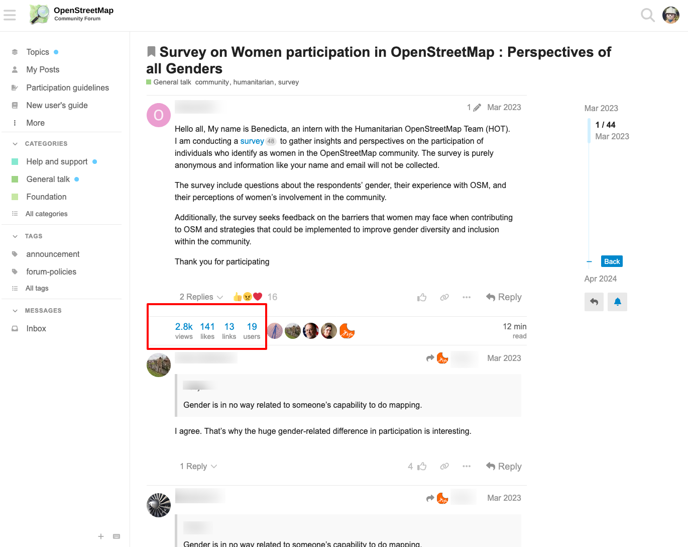
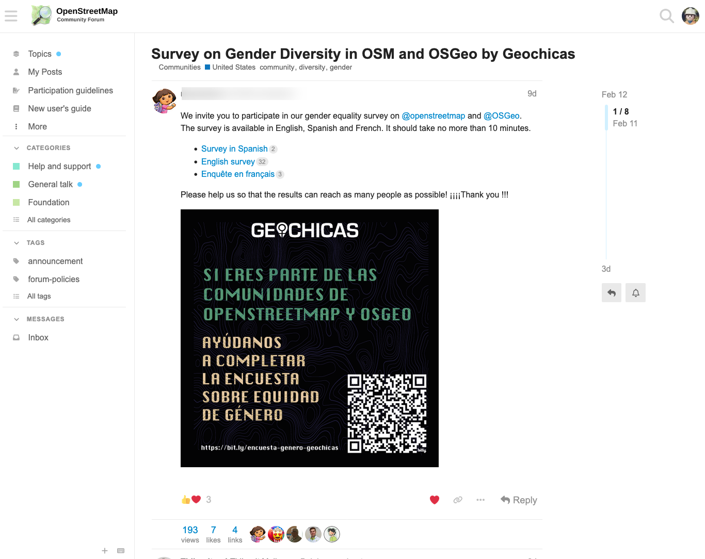
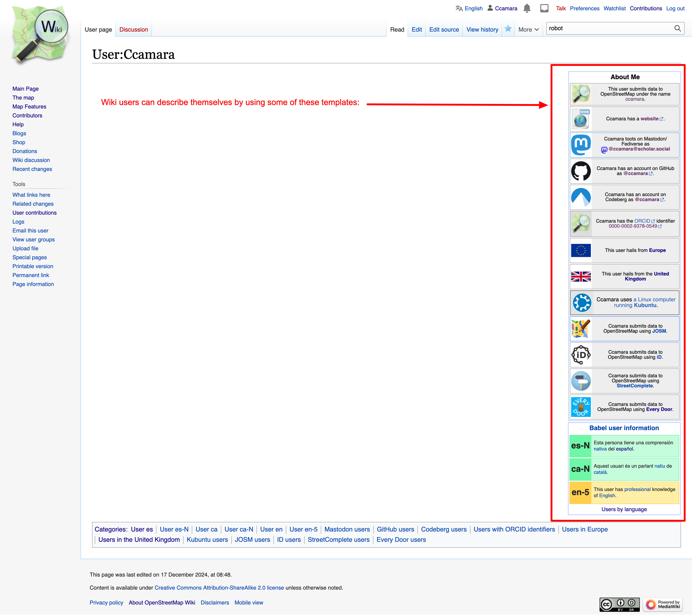
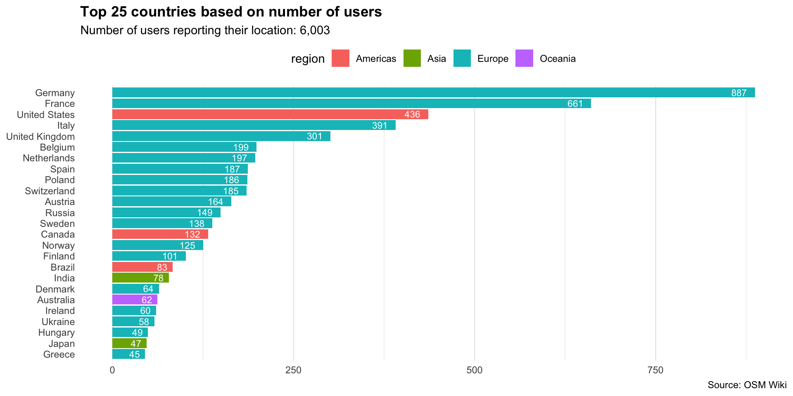
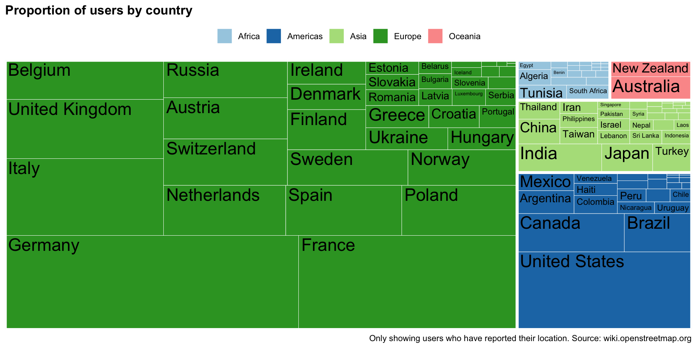
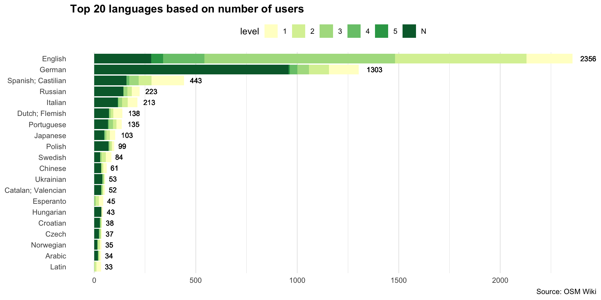
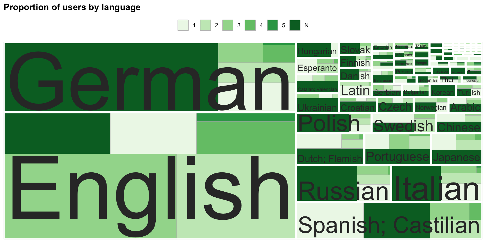
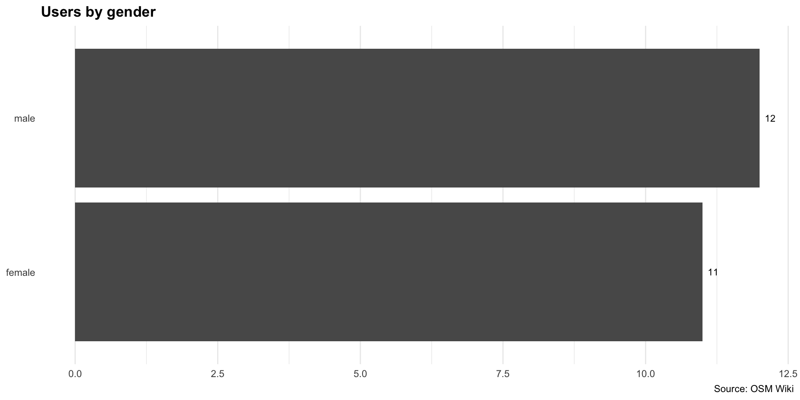

| country | population |
|---|---|
| Dominican Republic | 10,760,028 |
| Sweden | 10,609,460 |
| Greece | 10,482,487 |
| Jordan | 10,428,241 |
| Portugal | 10,347,892 |
Codesign session 3
What do we know about OSM users?
2026-12-02
Previously
We tried to map actors and projects in OSM. During the meeting we were pointed to interesting resources faced some challenges:
Scope: what kind of projects and actors do we want to include? We know they should be within OSM, but are they to be related to any underrepresented groups or just one category? (gender, ethnicity, sexual orientation…)
Population mechanism: how and who can/should populate the dataset? How to ensure that information is exhaustive, up-to-date? How do we know if something is happening?
Potential workarounds:
We could try to automate data extraction and visualisations, with caveats.
We could focus on a specific group (e.g. Geochicas) are doing, and use it as a case to explain their story (who their members are, their demographics, their topics, their initiatives…)
These slides explore #1: Following Silvia’s pointer, we have been exploring how to use wiki categories in an automated way.
OSM users
There are a total of 10,764,557 OSM users1
There are 95 countries with less population!
https://wiki.openstreetmap.org/wiki/Stats Provides lots of interesting stats about users, like:


How many of them are actively contributing
But…
We do not know anything about their demographics.
Where do they contribute from?
Which languages do they speak?
What’s their ethnicity, gender, sexual orientation…?
Important
This information would inform about the world-views that are embedded on OSM community and its map.
Others have requested this


OSM Wiki as a proxy

As the only information about a user is their username, there’s no census of OSM.
Wiki users may want to add details to their personal page to disclose some features about themselves.
These features can be as diverse as:
- Software used
- Location
- Languages spoken
- …
Users by location

Relative

Users by language


Users by gender

Warning
Only 23 users have this information!
(preliminary) Results
OSM community1 has over-representation of hegemonic demographics:
More than 2/3 of users are from Europe, with a prominence of users from Germany and France.
More than half of the users speak English or German. The rest of the 50% is divided across multiple languages.
- This is unsurprisingly, given that the vast majority of wiki pages (TODO: count them) are written in English. English is also the language used in tagging and the OSMF.
Little interest in acknowledging diversity:
Few people (23) disclosed their gender
Nobody has disclosed ethnicity or sexual orientation using categories
But…
Results are not statistically relevant/representative:
- According to the wiki, there are a total of 157,810 wiki users, this represents a tiny 1% of total OSM users ( 10,764,557 OSM users).
- Not all wiki users have added that information to their profiles
- Out of the wiki users, only a fraction have disclosed that information (eg. only 6,003 have information about their countries a 3.8% out of the 2%)
Exploring alternative approach:
- Complement it with surveys?
- Do not look at what users says about themselves, but focus on what users do.
- This is what we will be exploring in our next codesign session!
Sources of info
This wiki page provides stats about number of wiki users and relevant info: https://wiki.openstreetmap.org/wiki/Special:Statistics
This page contains all users by language: https://wiki.openstreetmap.org/wiki/Category:Users_by_language
https://wiki.openstreetmap.org/wiki/Category:Users_by_country